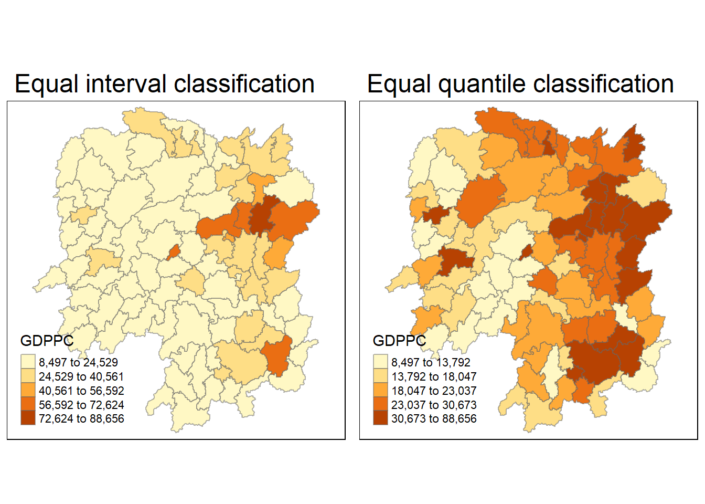
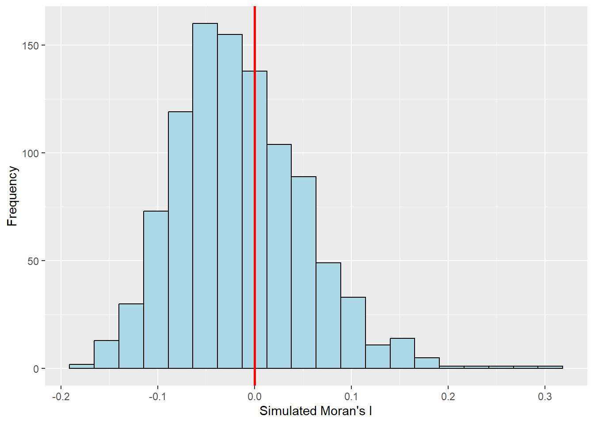

pacman::p_load(sf, spdep, tmap, tidyverse)Hands-on_Ex2: Global and Local Measures of Spatial Autocorrelation
Overview
In this chapter, I am going to learn how to compute Global and Local measures of Spatial Autocorrelation(GLSA) by using spdep package.
Getting Started
The case study is to discover if development is evenly distributed geographically in Hunan Province, China. And we take a selected development indicator (i.e. GDP per capita) as the spatial pattern. If the answer is No, our next question will be “is there sign of spatial clustering?”. If the answer for this question is Yes, the next question will be “where are these clusters?”.
Two data sets will be used in this hands-on exercise.
Hunan province administrative boundary layer at county level, which is in ESRI shapefile format.
Hunan_2012.csv contains selected Hunan’s local development indicators in 2012.
Launch the packages into R environment.
1.1 Getting the data into R environment
1.1.1 Import shapefile into R
hunan <- st_read(dsn = "data/geospatial", layer = "Hunan")Reading layer `Hunan' from data source
`H:\jocelyn276\ISSS624\Hands-on_Ex2\data\geospatial' using driver `ESRI Shapefile'
Simple feature collection with 88 features and 7 fields
Geometry type: POLYGON
Dimension: XY
Bounding box: xmin: 108.7831 ymin: 24.6342 xmax: 114.2544 ymax: 30.12812
Geodetic CRS: WGS 841.1.2 Import csv file into R
hunan2012 <- read_csv("data/aspatial/Hunan_2012.csv")Rows: 88 Columns: 29
── Column specification ────────────────────────────────────────────────────────
Delimiter: ","
chr (2): County, City
dbl (27): avg_wage, deposite, FAI, Gov_Rev, Gov_Exp, GDP, GDPPC, GIO, Loan, ...
ℹ Use `spec()` to retrieve the full column specification for this data.
ℹ Specify the column types or set `show_col_types = FALSE` to quiet this message.1.1.3 Perform relational join
hunan <- left_join(hunan, hunan2012)Joining, by = "County"1.1.4 Visualize Regional Development Indicator
Prepare a basemap and a choropleth map showing the distribution of GDPPC 2012 by using qtm() of tmap package.
equal <- tm_shape(hunan) +
tm_fill("GDPPC",
n=5,
style = "equal") +
tm_borders(alpha = 0.5)+
tm_layout(main.title = "Equal interval classification")
quantile <- tm_shape(hunan) +
tm_fill("GDPPC",
n=5,
style = "quantile") +
tm_borders(alpha = 0.5)+
tm_layout(main.title = "Equal quantile classification")
tmap_arrange(equal,
quantile,
asp=1,
ncol=2)
1.2 Global Spatial Autocorrelation
In this section, I am going to learn:
how to compute global spatial autocorrelation
perform spatial complete randomness test for global spatial autocorrelation
1.2.1 Computing Contiguity Spatial Weights
We need to construct a spatial weights of the study area at first.
wm_q <- poly2nb(hunan,
queen = TRUE)
summary(wm_q)Neighbour list object:
Number of regions: 88
Number of nonzero links: 448
Percentage nonzero weights: 5.785124
Average number of links: 5.090909
Link number distribution:
1 2 3 4 5 6 7 8 9 11
2 2 12 16 24 14 11 4 2 1
2 least connected regions:
30 65 with 1 link
1 most connected region:
85 with 11 links1.2.2 Row-standardized weights matrix
Assign weights to each neighboring polygon.
rswm_q <- nb2listw(wm_q,
style ="W",
zero.policy = TRUE)
rswm_qCharacteristics of weights list object:
Neighbour list object:
Number of regions: 88
Number of nonzero links: 448
Percentage nonzero weights: 5.785124
Average number of links: 5.090909
Weights style: W
Weights constants summary:
n nn S0 S1 S2
W 88 7744 88 37.86334 365.91471.2.3 Global Spatial Autocorrelation: Moran’s I
1.2.3.1 Moran’s I test
Use moran.test() to perform Moran’s I statistics testing.
moran.test(hunan$GDPPC,
listw = rswm_q,
zero.policy = TRUE,
na.action = na.omit)
Moran I test under randomisation
data: hunan$GDPPC
weights: rswm_q
Moran I statistic standard deviate = 4.7351, p-value = 1.095e-06
alternative hypothesis: greater
sample estimates:
Moran I statistic Expectation Variance
0.300749970 -0.011494253 0.004348351 1.2.3.2 Compute Monte Carlo Moran’s I
Use moran.mc() to performs permutation test for Moran’s I statistic.
set.seed(1234)
bperm = moran.mc(hunan$GDPPC,
listw = rswm_q,
nsim = 999,
zero.policy = TRUE,
na.action = na.omit)
bperm
Monte-Carlo simulation of Moran I
data: hunan$GDPPC
weights: rswm_q
number of simulations + 1: 1000
statistic = 0.30075, observed rank = 1000, p-value = 0.001
alternative hypothesis: greater1.2.3.3 Visualising Monte Carlo Moran’s I
Plot a histogram of the distribution of the statistical values.
mean(bperm$res[1:999])[1] -0.01504572var(bperm$res[1:999])[1] 0.004371574summary(bperm$res[1:999]) Min. 1st Qu. Median Mean 3rd Qu. Max.
-0.18339 -0.06168 -0.02125 -0.01505 0.02611 0.27593 hist(bperm$res,
freq=TRUE,
breaks=20,
xlab="Simulated Moran's I")
abline(v=0,
col="Red")
Use ggplot2 to plot the values.
ggplot(mapping = aes(bperm$res))+
geom_histogram(bins=20,
color="black",
fill="light blue") +
labs(x = "Simulated Moran's I",
y = "Frequency") +
geom_vline(aes(xintercept=0),
color="Red", size=1)Warning: Using `size` aesthetic for lines was deprecated in ggplot2 3.4.0.
ℹ Please use `linewidth` instead.
1.2.4 Global Spatial Autocorrelation: Geary’s
1.2.4.1 Geary’s C Test
geary.test(hunan$GDPPC, listw=rswm_q)
Geary C test under randomisation
data: hunan$GDPPC
weights: rswm_q
Geary C statistic standard deviate = 3.6108, p-value = 0.0001526
alternative hypothesis: Expectation greater than statistic
sample estimates:
Geary C statistic Expectation Variance
0.6907223 1.0000000 0.0073364 1.2.4.2 Computing Monte Carlo Geary's C
set.seed(1234)
bperm=geary.mc(hunan$GDPPC,
listw=rswm_q,
nsim=999)
bperm
Monte-Carlo simulation of Geary C
data: hunan$GDPPC
weights: rswm_q
number of simulations + 1: 1000
statistic = 0.69072, observed rank = 1, p-value = 0.001
alternative hypothesis: greater1.2.4.3 Visualising Monte Carlo Carlo Geary’s C
mean(bperm$res[1:999])[1] 1.004402var(bperm$res[1:999])[1] 0.007436493summary(bperm$res[1:999]) Min. 1st Qu. Median Mean 3rd Qu. Max.
0.7142 0.9502 1.0052 1.0044 1.0595 1.2722 hist(bperm$res, freq=TRUE, breaks=20, xlab="Simulated Geary c")
abline(v=1, col="red") 
1.3 Spatial Correlogram
Spatial correlograms show how correlated are pairs of spatial observations when the distance(lag) between them